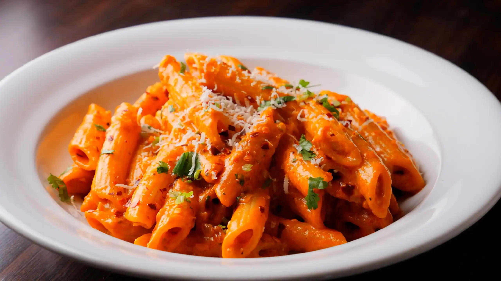

Home
Pasta Recipe
Ingredients:
- 200g pasta
- 2 cups tomato sauce
- 1 tbsp olive oil
- 2 cloves garlic, minced
- Salt and pepper to taste
Instructions:
-
Boil water in a large pot, add salt, and cook pasta according to package
instructions.
-
In a pan, heat olive oil over medium heat. Add minced garlic and sauté
until fragrant.
-
Add tomato sauce to the pan, season with salt and pepper, and let it
simmer for 10 minutes.
- Drain the cooked pasta and add it to the sauce. Toss to combine.
-
Serve hot, garnished with fresh basil or grated cheese if desired.
